서킷서 만난 AMG, 고성능은 '믿음'을 준다

【용인(경기도) = 카미디어】 윤지수 기자 = 어설픈 고성능은 불안하다. 하지만 ‘진짜’는 다르다. 오늘(17일) 서킷에서 만난 메르세데스-AMG 스포츠카들이 그랬다. 서킷에 풀린 AMG는 그야말로 '물 만난 물고기'였다. 숙성된 성능 앞에서 불안함은 찾을 수 없었다. 서킷을 힘껏 휘저어도 당황하는 기색 없이 차분했다. ‘고성능 차가 운전이 쉽다’는 말이 괜히 있는 게 아니었다.
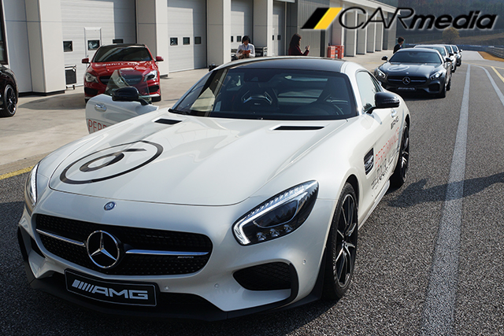행사엔 다양한 차들이 준비됐지만, 시선은 금방 한 차로 고정됐다. AMG GT S 에디션1. 오늘 준비된 차 중 가장 강력한 차다. 최고속도 시속 310km, 시속 100km까지 가속 시간 단 3.8초... 이 차는 소위 말하는 ‘슈퍼카’다. 슈퍼카를 타고 서킷을 달리는 ‘영광’을 위해 가장 먼저 이 차에 올랐다.
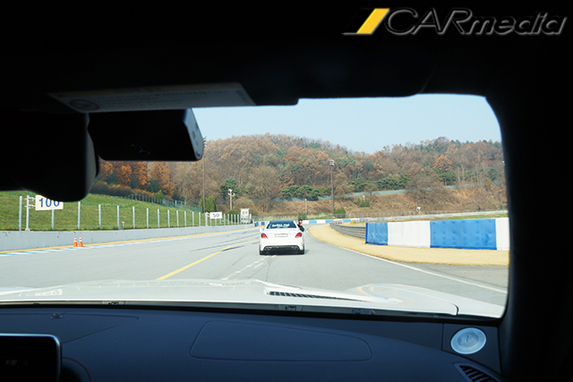차에 타자마자 가장 먼저 보이는 건 아래쪽 시야를 가득 채운 보닛이다. 마치 승용차 뒷좌석에 앉아있는 것처럼 거대한 보닛이 달려있다. 이런 특징은 움직임에서도 드러난다. 앞바퀴는 한참 멀리 떨어져 있고, 운전자는 뒷바퀴에 붙어 있기 때문에 운전대를 급하게 꺾어도, 운전자는 여유롭게 따라간다. 독특한 주행감을 느끼며 서서히 서킷에 진입했다.
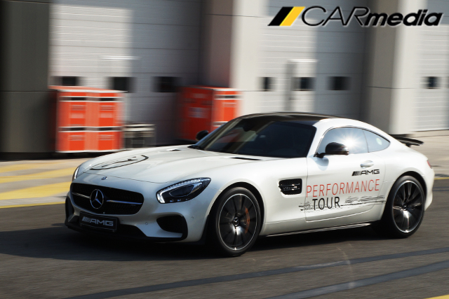드디어 서킷 진입 후 가속. V형 8기통 엔진(4.0리터 트윈터보 510마력)이 AMG 특유의 소리를 토해내며, 약 1.6톤의 차체를 거세게 밀어붙인다. 이미 뒤쪽 차들은 거울에서 멀어진 지 오래. 선두에 선 인스트럭터 카를 바짝 쫓지만, 인스트럭터 카(C63)는 이 차보다 느리다. 오늘 행사에서 GT S의 잠재력을 모두 끌어낼 순 없었다.
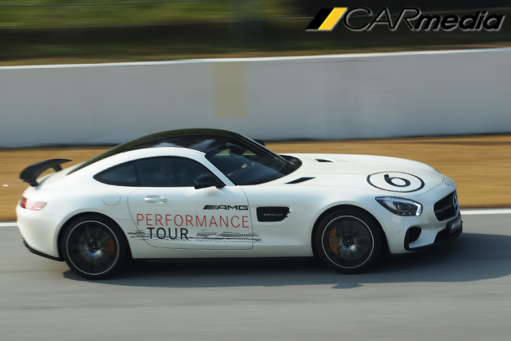코너에서도 마찬가지다. GT S는 어떤 속도에서도 허둥대는 모습을 보이지 않았다. 인스트럭터 카 뒤에 바짝 붙어 가장 빠른 속도로 코너에 진입했지만, 타이어 짓이기는 소리 하나 들을 수 없었다. 믿음직스러운 움직임에 살짝 긴장이 풀어진다. 계속되는 코너에서 속도를 점점 높였지만, GT S는 항상 원하는 궤적을 그렸다. 단지 코너를 탈출할 때 (일부러) 가속페달을 급하게 밟으면, 뒤를 조금씩 흘릴 뿐이었다.
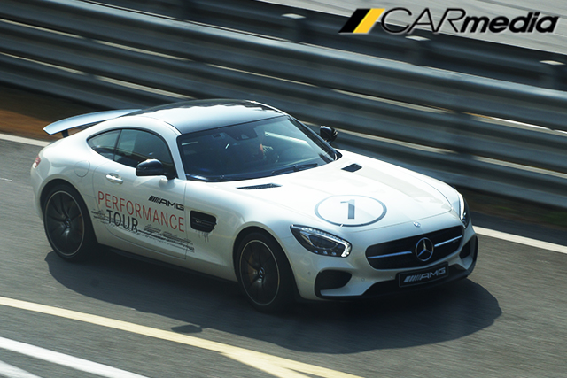그런데 코너를 탈출할 때의 재빠른 반응이 인상적이다. 주행모드 ‘레이스’에서 변속기는 엔진 rpm을 끝까지 활용했다. 속도를 줄이는 상황에서도 가장 낮은 기어를 놓지 않기 때문에, 언제든 가장 빠른 재가속이 가능하다. 굳이 수동으로 변속을 제어할 필요가 없을 정도다.
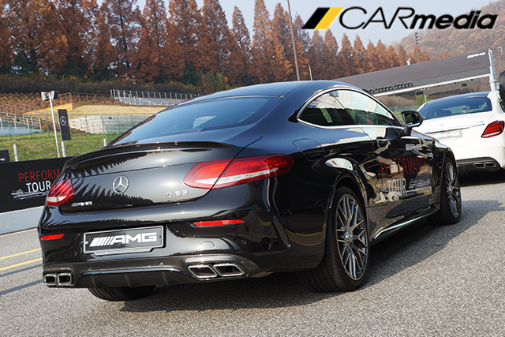이어서 C63 쿠페에 몸을 실었다. 첫 느낌은 한결 부드럽다. 마치 레이싱카처럼 단단하게 조여진 GT S를 타다가 C63 쿠페를 타니 훨씬 유연한 느낌이다. 솔직히 GT(장거리 여행용 고성능 차)엔 이 차가 더 가깝다.
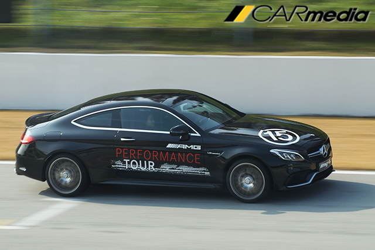하지만 이 차도 영락없는 AMG다. 뒤쪽에선 AMG 특유의 ‘빵빵’ 터지는 엔진음이 들려오고 운전자는 시트에 파묻힌다. C클래스 급 크기의 차체에 V형 8기통 트윈터보 엔진(4.0리터 476마력)의 출력은 차고 넘쳤다. 가속페달을 급하게 밟는 순간, 뒷 타이어가 바닥을 놓칠까 걱정될 정도로 강력하다.
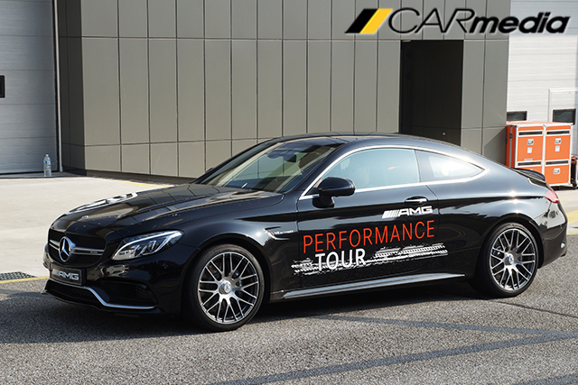이어지는 코너에서 브레이크로 무게 중심을 앞으로 옮긴 후 방향을 튼다. 역시 첫 느낌처럼 유연하게 돌아나간다. GT S가 기차 레일을 돌아나가는 기분이라면, 이 차는 레일과 바퀴 사이에 고무를 하나 덧댄 느낌이다. 그래서 GT S처럼 노면의 정보가 운전대에 직접적으로 전달되진 않지만, 막상 코너에서의 성능은 GT S를 쫓아가는 데 무리가 없었다.
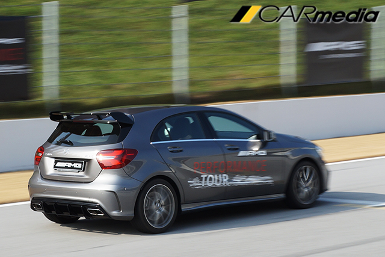마지막으로 A45에 앉았다. 크고 납작한 차들을 타다가 이 차에 앉으니, 다소 초라하게 느껴진다. ‘이걸로 저차들을 따라갈 수 있을까?’라는 생각이 머릿속을 스쳐 지나갔다. 하지만 이 생각이 ‘기우’였음을 알아차리는 데는 그리 오래 걸리지 않았다.
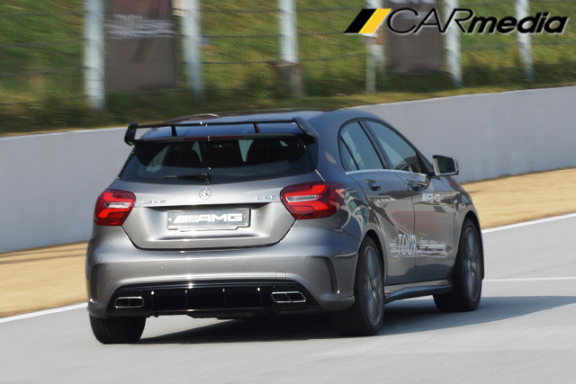A45는 한마디로 날쌨다. 먼저 탄 차들은 묵직한 ‘펀치’라면, 이 차는 가볍게 ‘잽’을 날리는 기분이다. 그래서 코너에서의 속도가 상당히 빠르다. 처음엔 ‘쫓아갈 수나 있을까’라며 걱정했지만, 오히려 A45는 앞에서 달리던 C63 세단을 압박했다. 기대치 않았던 성능에 옆에 동승한 기자는 “우와 이게 진짜 핫해치지”라며 감탄사를 연발했다. 솔직히 오늘 탄 차 중 가장 인상 깊었다. 참고로 A45는 2.0리터 터보 엔진이 들어가며 최고출력은 381마력, 최대토크는 48.4kg.m이다.
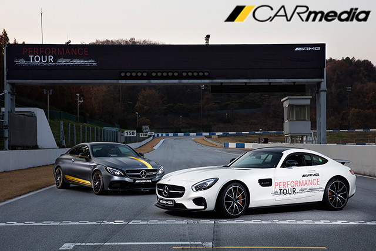AMG는 믿음직스러웠다. 운전자의 의도대로 움직였고, 예상을 벗어나지 않았다. 덕분에 차분한 마음으로 서킷을 즐길 수 있었다. 이전 세대 AMG의 ‘무지막지하게 힘만 센 차’라는 오명은 벗은 셈이다. 물론, 가속페달을 격하게 밟거나 미끄러짐을 유도하면, 장난기 넘치는 성격이 곧바로 되살아나긴 한다. 그간 포뮬러 원(F1), DTM(독일 투어링카 마스터즈) 등에서 쌓아온 AMG의 노하우는 ‘신뢰’를 주기에 충분했다.